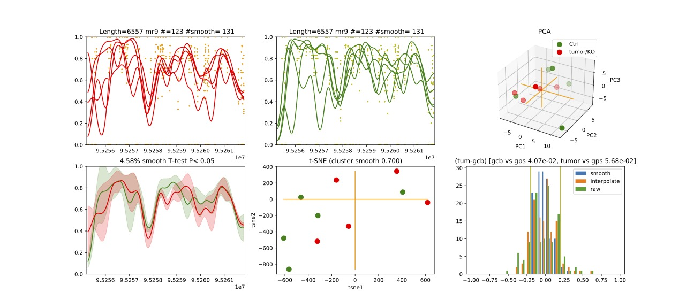

demo3
This script is a Bash script that calls the dmr_analysis program to predict differentially methylated regions (DMRs) and methylated regions (MRs) from whole-genome bisulfite sequencing (WGBS) RAT data.
Run Demo3:
Demo3 can be run by executing the bash script given with the pacakge. In this demo DNA methylation Regions are found and ranked.
sbatch job_dmr
While job_dmr is run in a cluster computer (SAGA) provided by Norwegian Research Infrastructure Services(NRIS). Remember to change this according to your machine. job_dmr looks like this
#!/bin/bash
#SBATCH --job-name=demo3-dmr
#SBATCH --time=15:00:00
#SBATCH --mem-per-cpu=15G --partition=bigmem
# Number of cores:
#SBATCH --cpus-per-task=20
#set up job environment
#source /etc/profile.d/modules.csh
#source /cluster/bin/jobsetup
#module use --append /cluster/etc/modulefiles
#module load java/jdk1.7.0_80
#module unload Java/1.8.0_212
#module purge
#module --ignore-cache load Java/1.7.0_80
module load BEDTools/2.27.1-foss-2018b #This command is specific to saga machine. If you have already installed bedtools, then you can delete this line.
./run_rat_part1_test.sh
Here this job calls a shell script file run_rat_part1_test.sh. This script is prepared by calling different modules of the dmr analysis. The demo assumes that the input data is already prepared in bed format, organized in chromosome named folders, and that the genome size file and refFlat files are available in a separate folder. Some initial parameter setting is done in the start of the script file as follows:
In folder path: final_demo_data/rat_data/in_data/WGBS-data/ Out folder path: final_demo_data/rat_data/out_data/DMR_CpG_context/
#!/bin/bash
#use bash script to call dmr_analysis
#this demo does not include chromatin segment data and no combination of results from genomic regions with chromatin segmentations.
##Please note variable under "#-- " have to be manually adjusted in different run or in different input data!
#--IN parameters --
#path of input data folder
#here, we assume all WGBS methylation profiles are already prepared in bed format at chromosome named folders under in_wgbs_folder,
#-- where file names indicate the sample name and conditions
in_wgbs_folder='../../final_demo_data/rat_data/in_data/WGBS-data/'
#path of input reference genome folder
#-- where genome size file and refFlat files will be used in making predefined genomic regions (e.g., TSS, TES, gene et al.) by using dmr_analysis module dmr_gene_annotation
in_genome_folder='../../final_demo_data/genome/rn6/'
in_genome_refFlat='rn6.refFlat.txt'
in_genome_size='rn6.chrom.sizes.clear.sorted'
replace='_clean_sorted.bed'
finds='.txt'
in_sorted_refFlat=${in_genome_refFlat//$finds/$replace}
#--OUT parameters --
#output data folder
#path to output folders
#-- where predicted DMR/MRs will be exported
out_result_folder='../../final_demo_data/rat_data/out_data/DMR_CpG_context'
#-- Name of output folders and files that will be created in out_result_folder
out_folder4genome_map='out_map2genome'
#cutoff value for selected DMRs in plot of map2genome
logProb_cutoff=0.7
out_file4genome_map=control_vs_test_DMR_hyper_hypo_mix_${logProb_cutoff}.csv
#a file name that contains all ranked DMRs by combining results from all chromosomes
mr_IN_FILE='*_chroms_all_mr_data_range_dmrRanking'
In folder path: final_demo_data/rat_data/in_data/WGBS-data/
WGBS methylation profiles (input) in bed format looks like the following. Path: final_demo_data/rat_data/out_data/DMR_CpG_context
chr1 1606571 1606571 1.00 5 +
chr1 1606572 1606572 0.80 5 -
chr1 1607216 1607216 0.75 8 +
chr1 1607268 1607268 1.00 7 +
chr1 1607591 1607591 0.57 7 +
chr1 1608764 1608764 0.81 16 +
chr1 1608765 1608765 0.71 14 -
chr1 1608920 1608920 0.25 12 +
chr1 1608921 1608921 0.71 14 -
chr1 1608956 1608956 0.33 9 +
Step 1: DMR Prediction:
In the first step, the DMRs are predicted and then predicted DMRs and MRs are then exported to the output data folder, and the results from all chromosomes are combined and ranked.
In part a, the dmr_analysis_block module is used to predict DMRs in chr1, chr2, chr3, chrX, and chrY.
They are combined using the dmr_combine_multChrs4rank script to combine and rank the DMRs across multiple chromosomes.
#STEP 1. run dmr_analysis to predict DMRs
#a) do dmr_analysis in blocks
for in_chrom in chr1 chr2 chr3 chrX chrY
do
dmr_analysis dmr_analysis_block --in_file_folder $in_wgbs_folder \
--chromosome $in_chrom --group_key $in_chrom \
--out_file_folder $out_result_folder \
--wildType_fileString _Ctrl \
--data_start_position 3 --data_end_position 13 \
--maximum_adjacency_length 1000 --minimum_block_size 5 \
--P_cutoff 0.05 --minimum_percentage_changes 0.0001 \
--percentage_cutoff 0.05,0.1,0.2 --low_median_high_cutoff 2 \
--number_of_processes 15 \
--is_smoothed_data 2 --is_moderate_ttest 0 --is_export_data 0 \
--column_splitBy_dotOrUnderscore 0
done
echo "dmr_analysis_block - Done"
#b) combine results from multiple chromosomes and rank the DMRs
dmr_analysis dmr_combine_multChrs4rank \
--in_chroms_number chr1,chr2,chr3,chrX,chrY \
--in_file_fold $out_result_folder \
--in_is_smoothed_data 2 \
--in_LogReg_proba 0.6 \
--in_low_median_high_cutoff high \
--in_file_ending_string _range.tsv
echo dmr_combine_multChrs4rank – Done
Step 2: DMR Plot and Export:
In the second step, the script plots using dmr_selected4plot and exports data for selected DMRs using the module dmr_exportData. The code and parameter setting can be seen as follows:
In part a, the dmr_selected4plot module is used to select DMRs for plotting.
In part b, output data and results are then exported using the dmr_exportData module.
#STEP 2. Plot and export data for selected DMRs
#-- please note the name of in_DMR_file may be changed in different run because of the parameters, the total number of input and the top percentage et al
chrom='chr3'
in_DMR_file=${chrom}'_all_mr_data_range_dmrRanking.tsv'
in_data_file=${chrom}'_MR_data4maxBlockDistance_1000_minBlockSize_5_data.txt.gz'
in_wildType_string='_Ctrl'
#a) some additional features for plotting and exporting data
#select DMR for plotting such as mr5,mr9,mr11
#here --in_DMR_file is exported by dmr_combine_multChrs4rank in "out_result_folder"/chrY/plots
##--in_data_file is exported by dmr_analysis_block in "out_result_folder"/chrY
dmr_analysis dmr_selected4plot --in_DMR_file ${in_DMR_file} \
--in_data_file ${in_data_file} \
--in_data_folder ${out_result_folder}/${chrom}/ \
--column_splitBy_dotOrUnderscore 0 --is_plot 1 --is_export 1 \
--needs_check_mr mr2,mr9,mr12 --wildType_fileString ${in_wildType_string} \
--out_folder ${out_result_folder}/out_selected4plot
echo plot selected MR - Done
#b) export selected DMR based on bed format file 0
##--input_file_name contains all MRs in bed format that need to extract their raw and smoothed methylation data
dmr_analysis dmr_exportData \
--input_mr_data_folder ${out_result_folder} \
--output_file_folder ${out_result_folder}/out_exportData \
--input_file_format 0 \
--wildType_fileString ${in_wildType_string} --input_file test_mr.bed
echo export selected MR - Done
Step 3: DMR Mapping:
In the third step, it maps the predicted DMRs and MRs to predefined genomic regions using . This demo also includes several parameters that can be manually adjusted , such as the path of the input and output data folders, the name of output folders and files, and the selected DMRs for plotting.
In part a, genomic regions are generated using the dmr_analysis module dmr_gene_annotation.
In part b, DMRs are mapped into genomic regions defined in part a.
Part c performs percentage calculations of DMR in annotated genomic regions.
These percentages from part c are plotted in the last step d..
#STEP 3. mapp predicted DMR/MRs to predefined genomic regions (e.g., TSS, TES, 5dist etl al) or predicted chromatin segments for further analysis
#below is a result file generated from dmr_combine_multChrs4rank, where DMR/MRs from multiple chromosomes are combined and ranked them by logistic regression model
#-- Please note this file name needs to be input manually because it is generated after running "dmr_combine_multChrs4rank" and exported at "out_result_folder"
#mr_IN_FILE='5_chroms_high_miniPercentChange_gt_0.0001_Pcutoff_0.05_isSmooth_2_isModTest_0__range_dmrRanking_top_0.73_minLogReg_proba_0.6'
#mr_IN_FILE='*_chroms_all_mr_data_range_dmrRanking'
#a) generate predefined genomic regions (e.g., TSS, TES, gene et al.) by dmr_analysis (Used for gene annotation, Omer 27, April, 23)
#Here, to edit exported "list_region_files.txt" for adding/removing predefined genomic regions
#For example, to add file path for enhancer regions in "list_region_files.txt" if user want to include enhancer in the analysis
dmr_analysis dmr_gene_annotation -F ${out_result_folder} -i no -l 10 \
-xL 50000000 -X 5000 -Y 1000 -M 5000 -N 1000000 -hu yes -n no \
-r ${in_genome_folder}/${in_genome_refFlat} \
-g ${in_genome_folder}/${in_genome_size}
echo export genome annotation files at: ${out_result_folder}/data
echo gene_annotation-Done
#b) map DMR to predefined genomic regions such as TSS, TES, gene et al.
dmr_analysis dmr_map2genome --in_sortedDMR_file ${out_result_folder}/${mr_IN_FILE}.bed \
--in_geneRegion_file ${out_result_folder}/list_region_files.txt \
--in_outFile_folder ${out_result_folder}/${out_folder4genome_map} \
--in_refFlat_file ${out_result_folder}/data/${in_sorted_refFlat}
echo dmr_map2genome - Done
#c) calculate percentage of DMR in annotated genomic regions
dmr_analysis dmr_cal2genome_percent --in_outFile_folder ${out_result_folder}/${out_folder4genome_map} \
--in_outFile_name ${out_file4genome_map} --in_LogReg_proba ${logProb_cutoff} \
--in_fileName_string $mr_IN_FILE
echo dmr_cal2genome_percent - Done
#d) plot percentage of DMR in annotated genomic regions
dmr_analysis dmr_percent2plot --in_countFile_folder ${out_result_folder}/${out_folder4genome_map} \
--in_countFile_name ${out_file4genome_map}
echo dmr_percent2plot - Done
Output:
Output produced can be found under the folder: final_demo_data/rat_data/out_data/DMR_CpG_context/
A log file is maintained to track the progress and steps of pipeline.
Tue, 14 Mar 2023 19:06:10 INFO File load ['../../final_demo_data/rat_data/out_data/DMR_CpG_context/chr1/chr1_MR_data4maxBlockDistance_1000_minBlockSize_5_data.txt.gz']
Tue, 14 Mar 2023 19:06:10 INFO Blocks with distance greater than 1000
Tue, 14 Mar 2023 19:06:10 INFO and minimum data points in block 5
Tue, 14 Mar 2023 19:06:10 INFO block size 29
Tue, 14 Mar 2023 19:06:10 INFO Export data in ../../final_demo_data/rat_data/out_data/DMR_CpG_context/chr1_MR_data4maxBlockDistance_1000_minBlockSize_5_data.txt
Tue, 14 Mar 2023 19:06:11 INFO minimum MR length 139
Tue, 14 Mar 2023 19:06:11 INFO maximum MR length 143799
Tue, 14 Mar 2023 19:06:11 INFO Maximum length of adjacency CpG sites in a block 1000
Tue, 14 Mar 2023 19:06:11 INFO Hist plot n [ 0 2 1 4 3 15 2 2]
Tue, 14 Mar 2023 19:06:11 INFO bins [ 100 139 500 1000 5000 10000 50000 100000 143899]
Tue, 14 Mar 2023 19:06:11 INFO minimum MR data size 5
Tue, 14 Mar 2023 19:06:11 INFO maximum MR data size 3429
Tue, 14 Mar 2023 19:06:17 INFO Wild type /control sample file name is _Ctrl
Tue, 14 Mar 2023 19:06:17 INFO Wild/control sample 5 ,
Tue, 14 Mar 2023 19:06:17 INFO Tumor/KO sample 5 ,
Tue, 14 Mar 2023 19:06:17 INFO DMR export path ../../final_demo_data/rat_data/out_data/DMR_CpG_context/chr1/plots
Tue, 14 Mar 2023 19:06:17 INFO DMR export MR data path ../../final_demo_data/rat_data/out_data/DMR_CpG_context/chr1/data
Tue, 14 Mar 2023 19:06:17 INFO Do parallel calculation by using 15 processes
Tue, 14 Mar 2023 19:31:23 INFO Export all position results at : ../../final_demo_data/rat_data/out_data/DMR_CpG_context/chr1/plots/chr1_all_mr_data.tsv
Tue, 14 Mar 2023 19:31:23 INFO Export range position results at : ../../final_demo_data/rat_data/out_data/DMR_CpG_context/chr1/plots/chr1_all_mr_data_range.tsv
The output file contain information about DMR and are ranked. Each row shows one region with the p-value of smoothed and interpolated data, percentages and many other values calculated in the pipeline. Here is how an output file look like :
mr_id T-test_pval_smoothed_data T-test_pval_interpolated_data percent_data_passed_ttest gcb_vs_grpsDist_pval tumor_vs_grpsDist_pval gcb_vs_grpsDist_tval tumor_vs_grpsDist_tval cluster_accuracy low_negative_tumor_vs_gcb_percent median_negative_tumor_vs_gcb_percent high_negative_tumor_vs_gcb_percent low_positive_tumor_vs_gcb_percent median_positive_tumor_vs_gcb_percent high_positive_tumor_vs_gcb_percent is_DMR position DMR_type chroms log10_gcb_vs_grpsDist_pval log10_tumor_vs_grpsDist_pval log10_gcb_vs_grpsDist_pval_minMaxNorm log10_tumor_vs_grpsDist_pval_minMaxNorm dmr_weight_score percent_data_passed_ttest_gt_pvallogReg_score logReg_predicted_dmr
mr14 0.571336 0.571336 0.0 0.686632 0.755297 -0.41301 0.316462 0.5 0.0 0.0 0.0 0.25 0.0 0.0 U chr1,2046753-2046954,5 mix chr1 0.1632758850508229 7 0.12188217174913861 0.03397903985566845 0.034001634141513096 0.07087690783954906 0.0 -6.082604897297034 0.002277027258077264
mr9 0.146273 0.978889 0.0 0.277167 0.828713 -1.12114 0.220631 0.7 0.327273 0.0727273 0.0 0.0727273 0.0 0.0 U chr1,1769898-1783789,150 mix chr1 0.5572582920723499 0.08159578586354936 0.11790435416146432 0.022728048582144344 0.10650118443897738 0.0 -5.702382148354102 0.0033268991535182557
mr10 0.0148232 0.576517 0.0 0.408906 0.507621 0.845629 0.676586 0.7 0.444444 0.0707071 0.0 0.0808081 0.040404 0.0 U chr1,1785065-1809826,438 mix chr1 0.3883763902552919 0.2944603176938465 0.08192948209114184 0.08229523137582939 0.1102759541547154 0.0 -5.540298896386698 0.003910005236693135
mr19 0.450623 0.624907 0.0 0.665343 0.148363 0.440046 -1.51183 0.6 0.302326 0.0232558 0.0 0.0697674 0.0 0.0 U chr1,2187486-2198296,185 mix chr1 0.1769543301119864 0.828674044572721 0.03689279382161643 0.2317875232399288 0.11498885072984724 0.0 -5.529332148972101 0.003952950830142931
mr26 0.021626 0.921958 0.0 0.131878 0.88472 1.57941 -0.147072 0.6 0.075 0.0 0.0 0.275 0.0625 0.0 U chr1,2407653-2427766,430 mix chr1 0.8798272552114118 0.053194096428976496 0.18661732492937294 0.014780230260079106 0.10422360883031231 0.0 -5.170028642029075 0.005652276171361328
The output file of combining gene annotations look like following.
chr3 95000394 95007067 chr3:mr0:hyper:D 0.731926 chr3:94991085:95006690:NM_001168523||gene:5000:1000||Eif3m:-:94990085:95007690~chr3:95006690:95012690:NM_001168523||TSS:5000:1000||Eif3m:-:94990085:95007690 R~T
chr3 95255263 95261822 chr3:mr9:hyper:D 0.771836 chr3:95233165:95397594:NM_001144862||gene:5000:1000||LOC691083:+:95232165:95398594 R~T
chr3 95287904 95294894 chr3:mr12:hyper:D 0.728269 chr3:95233165:95397594:NM_001144862||gene:5000:1000||LOC691083:+:95232165:95398594 R~T
Here we visualize chromosome 3 methylation region 9 from the output file.
